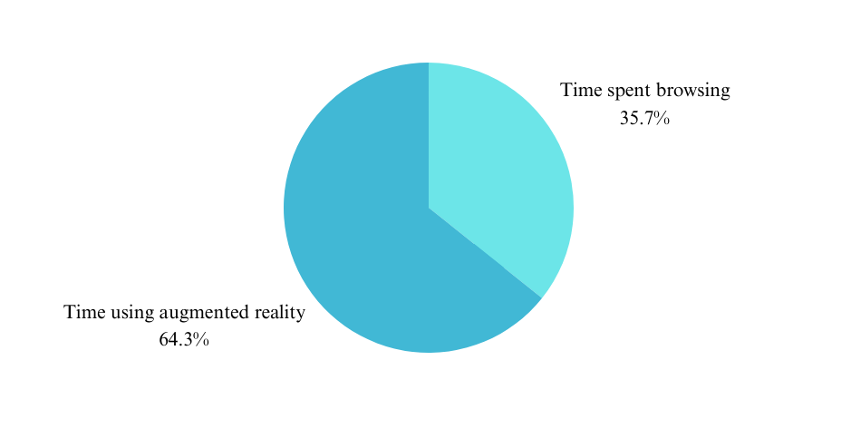

Augmented Reality and Online Shopping Behavior
Cristal Cruz Rios
California Polytechnic State University, San Luis Obispo
GrC 433: User Experience Methods for Digital Innovation
Summary
Augmented reality is the process of displaying digital images onto the current environment of a user, usually through a mobile device (BigCommerce 2024). The use of augmented reality in mobile shopping applications hopes to increase user interaction and therefore increase the user's commitment to purchasing a product.
UX evaluation and analysis
To test the theory that augmented reality affects how users shop, an observational study was conducted. One user was directed to complete 3 tasks using Amazon’s augmented reality feature. First the user was instructed to look through three predetermined furniture listings of similar price and similar style. Afterwards they were instructed to click through all listings and use augmented reality on only one. Then they were instructed to add one listing by only looking at the pictures and disregarding all other information once the user added something to the ccart the study concluded.Below are some observations based on what the user did.

The participant spent two minutes and seventeen seconds deciding what product to add to the cart, for 47 seconds he reviewed the listings before selecting one. When instructed to use the augmented reality feature the participant spent one minute and fifty seconds. When asked how he determined which listing he was going to use augmented reality feature on, the participant stated that he chose which one he would be most likely to buy first. The participant said that the augmented reality feature helped reassure him that he was making the right purchase.
Evaluation
In the study Evaluating garments in augmented reality when shopping online (Baytar et al. 2020), it was observed that participants were able to accurately choose clothes that fit them uses and augmented reality feature on the website. This shows that augmented reality can help customers feel reassured that they are purchasing the correct size of product. This also aligns with the results of this observational study.
Conclusion
In conclusion reaffirming the customers decision with augmented reality can help customers feel more connected to a product and surer of their decision at the time of purchase. With the improvement of this technology there is more opportunity for businesses to make online shopping compete with in person stores.
Sources
Baytar, F., Chung, T., & Shin, E. (2020). Evaluating garments in augmented reality when shopping online. [Evaluating garments in augmented reality] Journal of Fashion Marketing and Management, 24(4), 667-683. doi:https://doi.org/10.1108/JFMM-05-2018-0077
BigCommerce. (2024, January 19). Augmented reality in ecommerce: How does it work? https://www.bigcommerce.com/articles/ecommerce/ecommerce-augmented-reality/